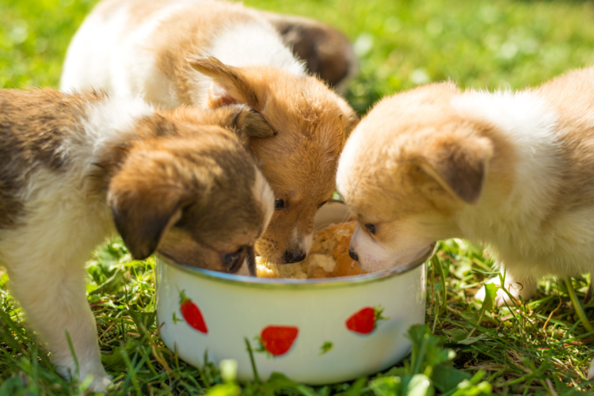

A kutyák etetésénél fontos, hogy életkoruknak, méretüknek és aktivitásuknak megfelelő táplálékot kapjanak.
A kiegyensúlyozott étrend tartalmazza a szükséges fehérjéket, zsírokat, szénhidrátokat, vitaminokat és ásványi anyagokat.
| Életkor | Etetés | Tudnivaló |
|---|---|---|
| 0–3 hetes | 4–6× | Anyatej vagy tejpótló |
| 3–8 hetes | 4–5× | Pépes kölyöktáp |
| 2–6 hónapos | 3–4× | Kölyökeledel |
| 6–12 hónapos | 2–3× | Átállás felnőtt rendre |
| 1–7 éves | 1–2× | Felnőtt kutyaeledel |
| 7–10 éves | 1–2× | Idősebb kutyaeledel |
| 10+ éves | 1–2× | Senior kutyatáp |
Mindig legyen a kutya előtt friss, tiszta ivóvíz.
Az adagokat érdemes megfelelően kimérni.
Bővebben a kutyák etetéséről itt.
